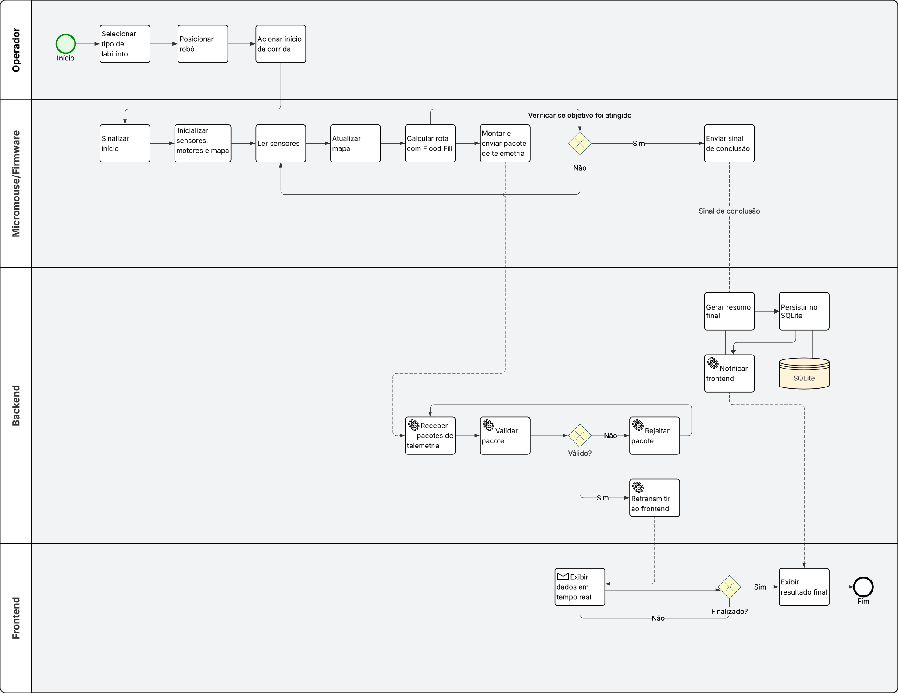

Diagrama BPMN
O diagrama BPMN representa o fluxo principal de uma corrida do Micromouse, desde o acionamento do robô pelo operador até o monitoramento em tempo real e a consulta ao histórico de corridas.
O nível adotado é descritivo, com foco nas responsabilidades dos participantes, nas mensagens trocadas entre eles e nas principais decisões do processo.
Participantes do processo
| Participante | Responsabilidade |
|---|---|
| Operador | Prepara o robô, inicia a corrida, acompanha a telemetria e consulta o histórico |
| Micromouse / Firmware | Executa a navegação autônoma, lê sensores, controla motores, atualiza o mapa e envia telemetria |
| Sistema Web | Recebe, valida, exibe e armazena os dados da corrida |
O Sistema Web é dividido em duas partes:
| Área | Responsabilidade |
|---|---|
| Backend FastAPI | Recebe os dados do robô, valida os pacotes, retransmite ao frontend e registra o resultado no banco |
| Frontend HTML/CSS/JS | Exibe o painel de monitoramento, atualiza o mapa em tempo real e apresenta o histórico |
Dados utilizados no processo
| Dado | Origem | Uso |
|---|---|---|
| Pacote de telemetria | Firmware | Enviado ao backend para atualização do dashboard |
| Sinal de conclusão | Firmware | Indica o encerramento da corrida |
| Dados em tempo real | Backend | Enviados ao frontend para exibição |
| Resumo final da corrida | Backend | Exibido no frontend e salvo no banco |
| Histórico de corridas | SQLite | Consultado pelo backend e exibido no frontend |
| Mapa do labirinto | Firmware | Usado internamente para navegação |
| Leituras dos sensores | Sensores físicos | Usadas pelo firmware para detectar paredes |
O SQLite não é representado como participante do processo, pois não executa ações próprias. Ele funciona como armazenamento persistente acessado pelo backend.
Fluxo principal da corrida
O processo inicia quando o operador seleciona o tipo de labirinto, posiciona o robô na célula de partida e aciona o início da corrida.
Após receber o sinal de início, o firmware inicializa os sensores, os motores e a estrutura interna do mapa. A partir desse ponto, o robô passa a operar de forma autônoma, sem intervenção externa.
Durante a corrida, o firmware executa dois fluxos em paralelo:
1. Navegação:
leitura dos sensores → atualização do mapa → cálculo da rota → controle dos motores
2. Telemetria:
montagem dos pacotes → envio dos dados ao backend → repetição contínua durante a corrida
````
Na fase de exploração, o robô percorre o labirinto célula por célula, identifica paredes e atualiza o mapa interno. Com base nessas informações, utiliza o algoritmo Flood Fill para escolher o próximo movimento em direção ao objetivo.
Após encontrar o caminho, o robô realiza a corrida utilizando o mapa construído, buscando alcançar a sala central de forma mais eficiente. Ao concluir a corrida, o firmware envia um sinal de conclusão ao backend.
---
## Processamento no Sistema Web
O backend recebe os pacotes de telemetria enviados pelo firmware por WebSocket. Cada pacote é validado antes de ser processado.
Se o pacote for válido, os dados são retransmitidos ao frontend para atualização do painel em tempo real. Se o pacote for inválido, ele é rejeitado sem interromper o funcionamento do servidor.
Quando o backend recebe o sinal de conclusão, compila o resumo final da corrida, envia o resultado consolidado ao frontend e registra os dados no SQLite.
O frontend mantém a conexão com o backend, atualiza o mapa e exibe os principais dados da corrida:
* tipo do labirinto;
* trajeto percorrido;
* bateria;
* velocidade média;
* tempo;
* status do desafio.
Ao detectar a conclusão da corrida, o frontend exibe a tela com o resultado final. Opcionalmente, o operador pode consultar o histórico de corridas filtrando por tipo de labirinto ou visualizando todos os registros.
---
## Fluxo resumido
```text
Operador
→ seleciona labirinto
→ posiciona o robô
→ aciona início
Firmware
→ inicializa sensores e motores
→ lê sensores
→ atualiza mapa
→ calcula rota com Flood Fill
→ controla motores
→ envia telemetria
→ detecta conclusão
→ envia sinal final
Backend
→ recebe telemetria
→ valida pacotes
→ retransmite ao frontend
→ recebe sinal de conclusão
→ gera resumo final
→ salva no SQLite
Frontend
→ exibe dados em tempo real
→ atualiza o mapa
→ mostra resultado final
→ permite consulta ao histórico
Eventos principais
| Evento | Participante | Descrição |
|---|---|---|
| Início da corrida | Operador | O operador aciona o início do desafio |
| Recebimento do início | Firmware | O robô inicia sua execução autônoma |
| Envio de telemetria | Firmware | O robô envia dados periódicos ao backend |
| Recebimento de telemetria | Backend | O servidor recebe e valida os dados |
| Atualização do painel | Frontend | A interface exibe os dados recebidos |
| Conclusão da corrida | Firmware | O robô detecta o fim do percurso |
| Persistência dos dados | Backend | O resultado final é salvo no SQLite |
| Consulta de histórico | Operador | O operador visualiza corridas anteriores |
Gateways do processo
| Gateway | Tipo | Função |
|---|---|---|
| Navegação e telemetria | Paralelo | Permite que o robô navegue e envie dados simultaneamente |
| Objetivo atingido? | Exclusivo | Decide se o robô continua navegando ou encerra a fase |
| Pacote válido? | Exclusivo | Decide se o backend processa ou rejeita os dados recebidos |
| Sinal de conclusão presente? | Exclusivo | Decide se a corrida será consolidada e salva |
| Corrida finalizada? | Exclusivo | Decide se o frontend mantém o monitoramento ou exibe o resultado final |
Objetos de conexão
| Objeto | Uso |
|---|---|
| Fluxo de sequência | Liga atividades dentro do mesmo participante |
| Fluxo de mensagem | Representa a comunicação entre operador, firmware e sistema web |
| Associação | Relaciona atividades aos dados produzidos ou consumidos |
As principais mensagens trocadas no processo são:
Operador → Firmware: sinal de início
Firmware → Backend: pacotes de telemetria
Firmware → Backend: sinal de conclusão
Backend → Frontend: dados processados em tempo real
Backend → Frontend: resumo final da corrida
Diagrama BPMN

Histórico de versões
| Versão | Data | Descrição | Autor(es) | Revisor(es) | Descrição da Revisão |
|---|---|---|---|---|---|
1.0 |
27/04/2026 | Criação do documento de descrição textual do Diagrama BPMN | Arthur Moreira | Eduardo Ferreira | |
1.1 |
29/04/2026 | Melhoria da estrutura do documento | Arthur Moreira | Eduardo Ferreira | |
1.2 |
29/04/2026 | Reorganização da descrição textual do BPMN | Arthur Moreira | Eduardo Ferreira | |
1.3 |
07/05/2026 | Elaboração e Adição do Diagrama BPMN | Eduardo Ferreira | Pendente |